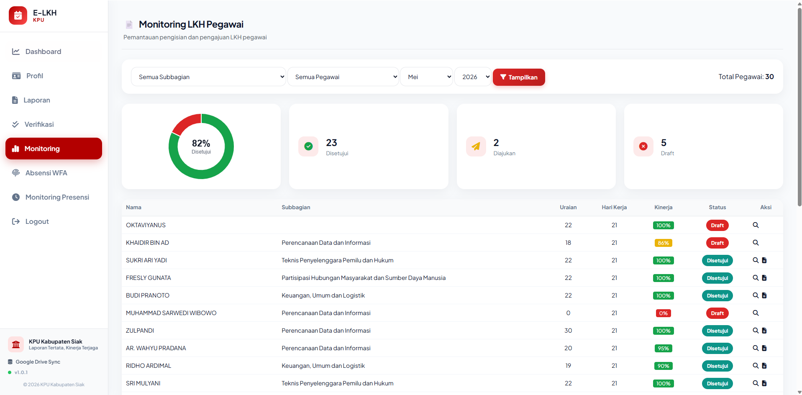

Hasil Aktualisasi CPNS 2026
Hasil Aktualisasi CPNS 2026
"Belum optimalnya akuntabilitas pelaporan kinerja harian ASN di KPU Kabupaten Siak"
Root
Cause:
Belum adanya sistem pelaporan digital terintegrasi





Dokumen hasil analisis evaluasi implementasi Sistem E-LKH memuat partisipasi responden, kepuasan & kelayakan, capaian indikator, manfaat & kendala, serta rekomendasi pengembangan berkelanjutan.